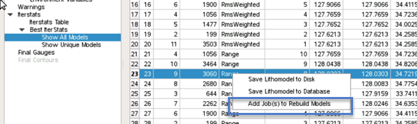
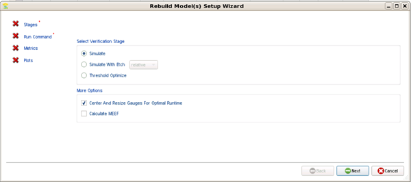

The model returned from the successful
calibration, known as the Final Model, is the only model that is
saved to the disk. However, the other models that were tested during
calibration can be rebuilt as a separate calibration job.
Procedure
- From the
Calibration Job Manager tab, open the completed calibration job
by selecting it and clicking View.
- In the
Calibration Job Record dialog box, scroll down to the Iterstats section.
Open the Iterstats Table, or the Best
Iterstats > Show All Models or Show
Unique Models page.
- Click on
the line with the model you want to rebuild, and right click to
raise the context menu. Select Add Job(s) to Rebuild
Models.

- The Rebuild
Model(s) Setup Wizard appears. This wizard contains a subset of
the functionality found in the Stages wizard. It only contains simulation-type
options, a way to customize your runscript, a way to select metrics,
and a way to specify plots.

Specify options as needed using the wizard, and click Finish.
The new rebuild job(s) appear in the Calibration
Job viewer, and can be run immediately.